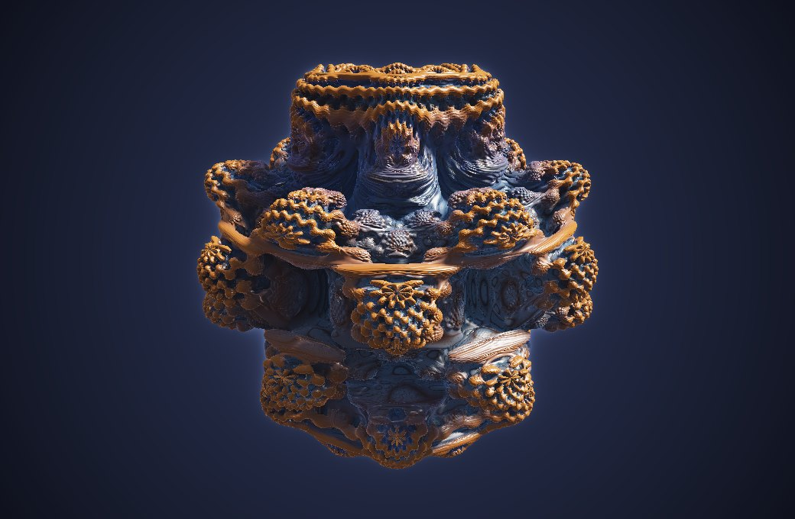

A
Ένα σημείο στον χώρο
Κάθε σημείο P(x, y, z) περιγράφεται και με την απόσταση r από την αρχή και δύο γωνίες: τη θ από τον άξονα z και τη φ στο επίπεδο xy.
Σφαιρικές συντεταγμένες, ray marching και Python | Λύκειο & πανεπιστήμιο
Το σύνολο Mandelbrot ζει στο επίπεδο, γιατί στηρίζεται στον πολλαπλασιασμό των μιγαδικών. Για χρόνια οι λάτρεις των fractals έψαχναν ένα «τρισδιάστατο Mandelbrot», αλλά στον χώρο δεν υπάρχει πολλαπλασιασμός με τις ίδιες καλές ιδιότητες.
Το 2009 οι Daniel White και Paul Nylander δοκίμασαν μια «τριπλή» δύναμη με σφαιρικές συντεταγμένες: υψώνουμε το μέτρο στη δύναμη n και πολλαπλασιάζουμε τις γωνίες επί n. Με n = 8 εμφανίστηκε ο Mandelbulb, ένα σχήμα με λεπτομέρειες σε κάθε κλίμακα.
Δεν φτιάχνεται από τρίγωνα, όπως τα άλλα 3D σχήματα. Ο browser τον ζωγραφίζει με ray marching: για κάθε pixel στέλνει μια ακτίνα και την προχωρά προσεκτικά, ώσπου να «ακουμπήσει» την επιφάνεια.
Ο ίδιος κανόνας, μία διάσταση πάνω!
Σύρε για να τον γυρίσεις και γύρνα τη ροδέλα (ή τσίμπησε στην οθόνη αφής) για zoom. Ο Mandelbulb σχεδιάζεται ζωντανά από την κάρτα γραφικών του υπολογιστή σου, με φως, σκιές και χρώματα.

Ο browser σου δεν υποστηρίζει WebGL, οπότε βλέπεις μια έτοιμη εικόνα. Άνοιξε τη σελίδα σε άλλον browser ή υπολογιστή για τη ζωντανή εκδοχή.
Η «Ζωντανή δύναμη» αλλάζει συνεχώς το n από 2 έως 8, και ο Mandelbulb μεταμορφώνεται μπροστά σου. Η «Τομή» κόβει ό,τι βρίσκεται πάνω από ένα ύψος z, για να φανεί το εσωτερικό του. Όσο το σχήμα κινείται, ο εξερευνητής χαμηλώνει μόνος του την ανάλυση αν χρειάζεται, και όταν σταματήσει το ζωγραφίζει σε πλήρη ανάλυση.
Κάθε σημείο P(x, y, z) περιγράφεται και με την απόσταση r από την αρχή και δύο γωνίες: τη θ από τον άξονα z και τη φ στο επίπεδο xy.
Στο επίπεδο, το z² έχει διπλάσια γωνία και μέτρο |z|². Στον χώρο κάνουμε το ίδιο: r → rⁿ, θ → nθ, φ → nφ.
Όπως στο σύνολο Mandelbrot: v → vⁿ + c, ξανά και ξανά. Τα c που δεν ξεφεύγουν σχηματίζουν τον Mandelbulb.
Στο εργαστήριο 8 ο κανόνας z → z² + c δούλευε χάρη στον πολλαπλασιασμό των μιγαδικών. Για να πάμε στις τρεις διαστάσεις χρειαζόμαστε μια «δύναμη» για σημεία του χώρου, και έναν τρόπο να σχεδιάσουμε κάτι που δεν έχει επίπεδες έδρες.
Σε πολικές συντεταγμένες z = r(cos φ + i·sin φ). Με τον τύπο του De Moivre:
Δηλαδή η δύναμη υψώνει το μέτρο και πολλαπλασιάζει τη γωνία. Αυτή την ιδέα θα μεταφέρουμε στον χώρο.
Ο William Rowan Hamilton προσπάθησε για χρόνια να πολλαπλασιάσει τριάδες αριθμών, χωρίς επιτυχία. Το 1877 ο Frobenius απέδειξε γιατί:
Αυτά είναι τα μόνα συστήματα αριθμών πεπερασμένης διάστασης με προσεταιριστικό πολλαπλασιασμό και διαίρεση. Στις 3 διαστάσεις δεν υπάρχει, γι' αυτό ο Mandelbulb «μιμείται» τον De Moivre.
Ένα σημείο (x, y, z) γράφεται με την απόσταση r και δύο γωνίες:
Και αντίστροφα: (x, y, z) = r · (sin θ cos φ, sin θ sin φ, cos θ). Στον κώδικα: acos(z / r) και atan2(y, x).
Ο κανόνας είναι v → vⁿ + c με v₀ = 0, και σταματάμε όταν |v| > 2. Όσο μεγαλύτερο το n, τόσο περισσότεροι «λοβοί» εμφανίζονται.
Από την κάμερα ξεκινά μια ακτίνα p(t) = o + t·d για κάθε pixel. Αν ξέρουμε ότι η επιφάνεια απέχει τουλάχιστον δ(p), μπορούμε να προχωρήσουμε τόσο χωρίς να την προσπεράσουμε:
Συνήθως αρκούν 50 έως 150 βήματα ανά pixel. Αν η ακτίνα βγει από τη σφαίρα ακτίνας 1,25 που περικλείει τον Mandelbulb, το pixel είναι φόντο.
Μαζί με το v υπολογίζουμε και την παράγωγο dr, που μετρά πόσο «τεντώνει» ο κανόνας τον χώρο:
Ο τύπος προκύπτει από το «δυναμικό» G = lim ln|vₖ| / nᵏ, με δ ≈ G / |∇G|. Από το ίδιο δ βρίσκουμε και το κάθετο διάνυσμα της επιφάνειας, που χρειάζεται για το φως και τις σκιές.
Η Python κάνει τον υπολογισμό για τα 120 × 120 = 14.400 σημεία μιας τομής. Η κάρτα γραφικών τρέχει τον ίδιο τύπο, γραμμένο στη γλώσσα GLSL, για κάθε pixel: περίπου 100 βήματα ray marching × 9 επαναλήψεις, δηλαδή εκατομμύρια υπολογισμούς σε κάθε καρέ.
Στις 16 Οκτωβρίου 1843, περπατώντας στο Δουβλίνο, ο Hamilton βρήκε επιτέλους πώς να πολλαπλασιάζει: όχι τριάδες, αλλά τετράδες αριθμών, τα τετραδόνια. Από τον ενθουσιασμό του χάραξε τον τύπο i² = j² = k² = ijk = −1 πάνω στη γέφυρα Brougham, όπου σήμερα υπάρχει αναμνηστική πλάκα.
Η Python κόβει τον Mandelbulb με το οριζόντιο επίπεδο z = SLICE και ελέγχει 120 × 120 σημεία της τομής. Άλλαξε το ύψος ή τη δύναμη, πάτησε «Εκτέλεση Python» και μετά «Δείξε την τομή στο 3D» για να δεις την ίδια τομή από πάνω.
Python 3 στον browser, μέσω Pyodide
Τα μαύρα σημεία ανήκουν στον Mandelbulb.